Legend: GT boundary green, prediction boundary magenta, TP blue tint, FP red, FN yellow, action cut orange/white.
{
"action_frac": "0.75",
"anchor_boundary_f1": "0.4165490993799009",
"anchor_boundary_iou": "0.2630641084082715",
"anchor_component_count_mae": "2.0",
"anchor_component_delta_mean": "-2.0",
"anchor_dice": "0.9322967245782929",
"anchor_gap_region_fp_rate": "0.19494562338350316",
"anchor_iou": "0.8731796052700757",
"anchor_precision": "0.926983914358751",
"anchor_recall": "0.9376707843092974",
"candidate_boundary_f1": "0.4225841334338238",
"candidate_boundary_iou": "0.267896464331713",
"candidate_component_count_mae": "2.0",
"candidate_component_delta_mean": "-2.0",
"candidate_dice": "0.9329228902532876",
"candidate_gap_region_fp_rate": "0.1911127730516344",
"candidate_iou": "0.8742787955359023",
"candidate_precision": "0.9282560336250936",
"candidate_rank": "1.0",
"candidate_recall": "0.9376369097355525",
"delta_boundary_f1": "0.006035034053922861",
"delta_boundary_iou": "0.0048323559234415",
"delta_component_count_mae": "0.0",
"delta_component_delta_mean": "0.0",
"delta_dice": "0.0006261656749946276",
"delta_gap_region_fp_rate": "-0.0038328503318687535",
"delta_iou": "0.0010991902658266106",
"delta_precision": "0.0012721192663425196",
"delta_recall": "-3.387457374492975e-05",
"image": "1620.png",
"r216_bg_channel_proxy": "1.0",
"r216_bg_component_count_delta": "0.0",
"r216_bg_components_after": "1.0",
"r216_bg_components_before": "1.0",
"r216_crop_area": "6498.0",
"r216_cut_adjacent_bg_components_before": "1.0",
"r216_cut_adjacent_bg_frac_before": "0.44390243902439025",
"r216_cut_area": "126.0",
"r216_cut_component_bg_area_after": "2758.0",
"r216_cut_component_bg_frac_crop_after": "0.4244382887042167",
"r216_cut_component_border_contacts_after": "4.0",
"r216_cut_frac_crop": "0.019390581717451522",
"r216_cut_gt_fg_frac": "0.023809523809523808",
"r216_cut_gt_gap_frac": "0.9761904761904762",
"r216_hard_risk": "0.0",
"r216_overerosion_proxy": "0.0",
"r216_quick_useful": "1.0",
"r216_safe_channel_proxy_positive": "1.0",
"run_id": "R216-soft-seam-action-candidate-diagnostic",
"split": "val",
"r219_group": "safe_useful"
}
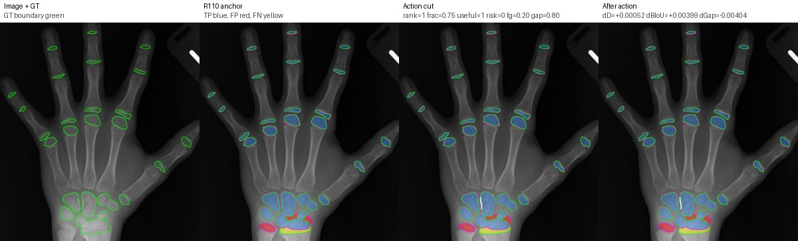
{
"action_frac": "0.75",
"anchor_boundary_f1": "0.4076344385622736",
"anchor_boundary_iou": "0.25599300087489063",
"anchor_component_count_mae": "1.0",
"anchor_component_delta_mean": "1.0",
"anchor_dice": "0.8741845467526529",
"anchor_gap_region_fp_rate": "0.1957871878393051",
"anchor_iou": "0.7764900936748735",
"anchor_precision": "0.8566516068848201",
"anchor_recall": "0.8924501695948779",
"candidate_boundary_f1": "0.412682202209637",
"candidate_boundary_iou": "0.2599871322454232",
"candidate_component_count_mae": "1.0",
"candidate_component_delta_mean": "1.0",
"candidate_dice": "0.874702194650248",
"candidate_gap_region_fp_rate": "0.19174809989142236",
"candidate_iou": "0.7773072963368869",
"candidate_precision": "0.8580515076528274",
"candidate_rank": "1.0",
"candidate_recall": "0.892011890697054",
"delta_boundary_f1": "0.005047763647363368",
"delta_boundary_iou": "0.003994131370532561",
"delta_component_count_mae": "0.0",
"delta_component_delta_mean": "0.0",
"delta_dice": "0.0005176478975951193",
"delta_gap_region_fp_rate": "-0.004039087947882741",
"delta_iou": "0.0008172026620133499",
"delta_precision": "0.0013999007680073339",
"delta_recall": "-0.00043827889782388496",
"image": "11852.png",
"r216_bg_channel_proxy": "1.0",
"r216_bg_component_count_delta": "0.0",
"r216_bg_components_after": "1.0",
"r216_bg_components_before": "1.0",
"r216_crop_area": "4048.0",
"r216_cut_adjacent_bg_components_before": "1.0",
"r216_cut_adjacent_bg_frac_before": "0.4855072463768116",
"r216_cut_area": "116.0",
"r216_cut_component_bg_area_after": "1154.0",
"r216_cut_component_bg_frac_crop_after": "0.28507905138339923",
"r216_cut_component_border_contacts_after": "3.0",
"r216_cut_frac_crop": "0.02865612648221344",
"r216_cut_gt_fg_frac": "0.19827586206896552",
"r216_cut_gt_gap_frac": "0.8017241379310345",
"r216_hard_risk": "0.0",
"r216_overerosion_proxy": "0.0",
"r216_quick_useful": "1.0",
"r216_safe_channel_proxy_positive": "1.0",
"run_id": "R216-soft-seam-action-candidate-diagnostic",
"split": "val",
"r219_group": "safe_useful"
}
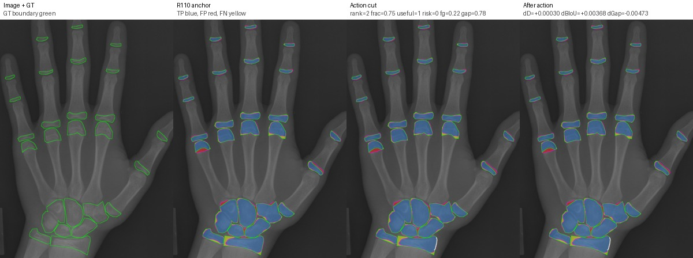
{
"action_frac": "0.75",
"anchor_boundary_f1": "0.23363598206198777",
"anchor_boundary_iou": "0.1322694414567648",
"anchor_component_count_mae": "5.0",
"anchor_component_delta_mean": "-5.0",
"anchor_dice": "0.9256587547148221",
"anchor_gap_region_fp_rate": "0.29841777624070553",
"anchor_iou": "0.8616058992216304",
"anchor_precision": "0.9261601331654087",
"anchor_recall": "0.9251579188147732",
"candidate_boundary_f1": "0.2393512703554351",
"candidate_boundary_iou": "0.13594493116395495",
"candidate_component_count_mae": "2.0",
"candidate_component_delta_mean": "2.0",
"candidate_dice": "0.9259561012560115",
"candidate_gap_region_fp_rate": "0.2936840740100294",
"candidate_iou": "0.8621212804605525",
"candidate_precision": "0.9270339147457717",
"candidate_rank": "2.0",
"candidate_recall": "0.9248807910896838",
"delta_boundary_f1": "0.005715288293447335",
"delta_boundary_iou": "0.003675489707190144",
"delta_component_count_mae": "-3.0",
"delta_component_delta_mean": "7.0",
"delta_dice": "0.00029734654118940274",
"delta_gap_region_fp_rate": "-0.004733702230676151",
"delta_iou": "0.0005153812389220302",
"delta_precision": "0.0008737815803629978",
"delta_recall": "-0.00027712772508936556",
"image": "1666.png",
"r216_bg_channel_proxy": "1.0",
"r216_bg_component_count_delta": "0.0",
"r216_bg_components_after": "1.0",
"r216_bg_components_before": "1.0",
"r216_crop_area": "7788.0",
"r216_cut_adjacent_bg_components_before": "1.0",
"r216_cut_adjacent_bg_frac_before": "0.3984375",
"r216_cut_area": "282.0",
"r216_cut_component_bg_area_after": "4085.0",
"r216_cut_component_bg_frac_crop_after": "0.5245249101181304",
"r216_cut_component_border_contacts_after": "4.0",
"r216_cut_frac_crop": "0.0362095531587057",
"r216_cut_gt_fg_frac": "0.22340425531914893",
"r216_cut_gt_gap_frac": "0.776595744680851",
"r216_hard_risk": "0.0",
"r216_overerosion_proxy": "0.0",
"r216_quick_useful": "1.0",
"r216_safe_channel_proxy_positive": "1.0",
"run_id": "R216-soft-seam-action-candidate-diagnostic",
"split": "val",
"r219_group": "safe_useful"
}
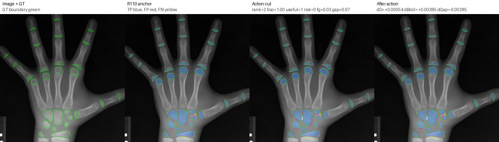
{
"action_frac": "1.0",
"anchor_boundary_f1": "0.3631018008085263",
"anchor_boundary_iou": "0.22182308037718904",
"anchor_component_count_mae": "0.0",
"anchor_component_delta_mean": "0.0",
"anchor_dice": "0.9164516103259003",
"anchor_gap_region_fp_rate": "0.16284825077805692",
"anchor_iou": "0.8457874323467386",
"anchor_precision": "0.9284615758203688",
"anchor_recall": "0.9047483830257138",
"candidate_boundary_f1": "0.3682448979591837",
"candidate_boundary_iou": "0.22567412076642154",
"candidate_component_count_mae": "0.0",
"candidate_component_delta_mean": "0.0",
"candidate_dice": "0.9169911178977159",
"candidate_gap_region_fp_rate": "0.1599985001312385",
"candidate_iou": "0.8467069227702892",
"candidate_precision": "0.9296030343799134",
"candidate_rank": "2.0",
"candidate_recall": "0.904716832307935",
"delta_boundary_f1": "0.005143097150657416",
"delta_boundary_iou": "0.0038510403892325074",
"delta_component_count_mae": "0.0",
"delta_component_delta_mean": "0.0",
"delta_dice": "0.000539507571815645",
"delta_gap_region_fp_rate": "-0.0028497506468184164",
"delta_iou": "0.0009194904235506618",
"delta_precision": "0.001141458559544617",
"delta_recall": "-3.1550717778827675e-05",
"image": "13436.png",
"r216_bg_channel_proxy": "1.0",
"r216_bg_component_count_delta": "0.0",
"r216_bg_components_after": "1.0",
"r216_bg_components_before": "1.0",
"r216_crop_area": "2924.0",
"r216_cut_adjacent_bg_components_before": "1.0",
"r216_cut_adjacent_bg_frac_before": "0.45121951219512196",
"r216_cut_area": "78.0",
"r216_cut_component_bg_area_after": "641.0",
"r216_cut_component_bg_frac_crop_after": "0.2192202462380301",
"r216_cut_component_border_contacts_after": "2.0",
"r216_cut_frac_crop": "0.02667578659370725",
"r216_cut_gt_fg_frac": "0.02564102564102564",
"r216_cut_gt_gap_frac": "0.9743589743589743",
"r216_hard_risk": "0.0",
"r216_overerosion_proxy": "0.0",
"r216_quick_useful": "1.0",
"r216_safe_channel_proxy_positive": "1.0",
"run_id": "R216-soft-seam-action-candidate-diagnostic",
"split": "val",
"r219_group": "safe_useful"
}
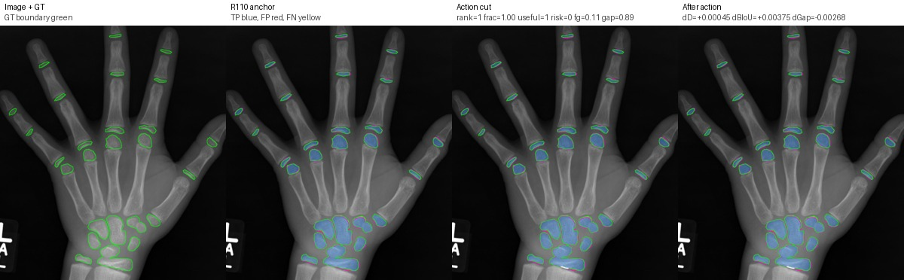
{
"action_frac": "1.0",
"anchor_boundary_f1": "0.44864",
"anchor_boundary_iou": "0.2891914191419142",
"anchor_component_count_mae": "2.0",
"anchor_component_delta_mean": "-2.0",
"anchor_dice": "0.937545553578846",
"anchor_gap_region_fp_rate": "0.19222218035196142",
"anchor_iou": "0.8824336485549474",
"anchor_precision": "0.9203286558345642",
"anchor_recall": "0.9554188962542928",
"candidate_boundary_f1": "0.45313936293513446",
"candidate_boundary_iou": "0.2929412980570484",
"candidate_component_count_mae": "1.0",
"candidate_component_delta_mean": "-1.0",
"candidate_dice": "0.937992581381306",
"candidate_gap_region_fp_rate": "0.1895466706862117",
"candidate_iou": "0.883226016068053",
"candidate_precision": "0.9213242543751541",
"candidate_rank": "1.0",
"candidate_recall": "0.9552751377685489",
"delta_boundary_f1": "0.004499362935134477",
"delta_boundary_iou": "0.003749878915134175",
"delta_component_count_mae": "-1.0",
"delta_component_delta_mean": "1.0",
"delta_dice": "0.0004470278024600871",
"delta_gap_region_fp_rate": "-0.0026755096657497257",
"delta_iou": "0.0007923675131055186",
"delta_precision": "0.000995598540589837",
"delta_recall": "-0.0001437584857438834",
"image": "15067.png",
"r216_bg_channel_proxy": "1.0",
"r216_bg_component_count_delta": "0.0",
"r216_bg_components_after": "1.0",
"r216_bg_components_before": "1.0",
"r216_crop_area": "3220.0",
"r216_cut_adjacent_bg_components_before": "1.0",
"r216_cut_adjacent_bg_frac_before": "0.42391304347826086",
"r216_cut_area": "80.0",
"r216_cut_component_bg_area_after": "1568.0",
"r216_cut_component_bg_frac_crop_after": "0.48695652173913045",
"r216_cut_component_border_contacts_after": "3.0",
"r216_cut_frac_crop": "0.024844720496894408",
"r216_cut_gt_fg_frac": "0.1125",
"r216_cut_gt_gap_frac": "0.8875",
"r216_hard_risk": "0.0",
"r216_overerosion_proxy": "0.0",
"r216_quick_useful": "1.0",
"r216_safe_channel_proxy_positive": "1.0",
"run_id": "R216-soft-seam-action-candidate-diagnostic",
"split": "val",
"r219_group": "safe_useful"
}
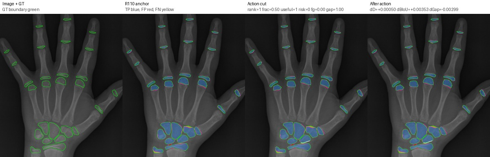
{
"action_frac": "0.5",
"anchor_boundary_f1": "0.4165490993799009",
"anchor_boundary_iou": "0.2630641084082715",
"anchor_component_count_mae": "2.0",
"anchor_component_delta_mean": "-2.0",
"anchor_dice": "0.9322967245782929",
"anchor_gap_region_fp_rate": "0.19494562338350316",
"anchor_iou": "0.8731796052700757",
"anchor_precision": "0.926983914358751",
"anchor_recall": "0.9376707843092974",
"candidate_boundary_f1": "0.4209560028850567",
"candidate_boundary_iou": "0.2665891537247737",
"candidate_component_count_mae": "2.0",
"candidate_component_delta_mean": "-2.0",
"candidate_dice": "0.9327993979185505",
"candidate_gap_region_fp_rate": "0.19195413044155682",
"candidate_iou": "0.8740619112275938",
"candidate_precision": "0.927978365572653",
"candidate_rank": "1.0",
"candidate_recall": "0.9376707843092974",
"delta_boundary_f1": "0.004406903505155768",
"delta_boundary_iou": "0.0035250453165022178",
"delta_component_count_mae": "0.0",
"delta_component_delta_mean": "0.0",
"delta_dice": "0.0005026733402575534",
"delta_gap_region_fp_rate": "-0.0029914929419463387",
"delta_iou": "0.000882305957518148",
"delta_precision": "0.000994451213901959",
"delta_recall": "0.0",
"image": "1620.png",
"r216_bg_channel_proxy": "1.0",
"r216_bg_component_count_delta": "0.0",
"r216_bg_components_after": "1.0",
"r216_bg_components_before": "1.0",
"r216_crop_area": "6555.0",
"r216_cut_adjacent_bg_components_before": "1.0",
"r216_cut_adjacent_bg_frac_before": "0.4666666666666667",
"r216_cut_area": "96.0",
"r216_cut_component_bg_area_after": "2785.0",
"r216_cut_component_bg_frac_crop_after": "0.4248665141113654",
"r216_cut_component_border_contacts_after": "4.0",
"r216_cut_frac_crop": "0.014645308924485127",
"r216_cut_gt_fg_frac": "0.0",
"r216_cut_gt_gap_frac": "1.0",
"r216_hard_risk": "0.0",
"r216_overerosion_proxy": "0.0",
"r216_quick_useful": "1.0",
"r216_safe_channel_proxy_positive": "1.0",
"run_id": "R216-soft-seam-action-candidate-diagnostic",
"split": "val",
"r219_group": "safe_useful"
}
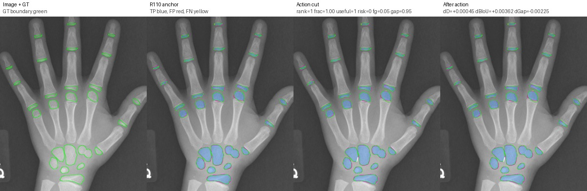
{
"action_frac": "1.0",
"anchor_boundary_f1": "0.474025974025974",
"anchor_boundary_iou": "0.31063829787234043",
"anchor_component_count_mae": "1.0",
"anchor_component_delta_mean": "-1.0",
"anchor_dice": "0.9386339329588484",
"anchor_gap_region_fp_rate": "0.1479247206763244",
"anchor_iou": "0.8843639928828207",
"anchor_precision": "0.9331583585577992",
"anchor_recall": "0.9441741456512047",
"candidate_boundary_f1": "0.4782310749691626",
"candidate_boundary_iou": "0.3142599819873912",
"candidate_component_count_mae": "1.0",
"candidate_component_delta_mean": "1.0",
"candidate_dice": "0.9390828199863107",
"candidate_gap_region_fp_rate": "0.14567313819618505",
"candidate_iou": "0.8851612903225806",
"candidate_precision": "0.9341030263511181",
"candidate_rank": "1.0",
"candidate_recall": "0.9441159937195914",
"delta_boundary_f1": "0.0042051009431886",
"delta_boundary_iou": "0.0036216841150507606",
"delta_component_count_mae": "0.0",
"delta_component_delta_mean": "2.0",
"delta_dice": "0.0004488870274622636",
"delta_gap_region_fp_rate": "-0.002251582480139347",
"delta_iou": "0.0007972974397598698",
"delta_precision": "0.0009446677933189207",
"delta_recall": "-5.8151931613292795e-05",
"image": "11945.png",
"r216_bg_channel_proxy": "1.0",
"r216_bg_component_count_delta": "0.0",
"r216_bg_components_after": "1.0",
"r216_bg_components_before": "1.0",
"r216_crop_area": "2790.0",
"r216_cut_adjacent_bg_components_before": "1.0",
"r216_cut_adjacent_bg_frac_before": "0.44594594594594594",
"r216_cut_area": "56.0",
"r216_cut_component_bg_area_after": "982.0",
"r216_cut_component_bg_frac_crop_after": "0.35197132616487453",
"r216_cut_component_border_contacts_after": "2.0",
"r216_cut_frac_crop": "0.02007168458781362",
"r216_cut_gt_fg_frac": "0.05357142857142857",
"r216_cut_gt_gap_frac": "0.9464285714285714",
"r216_hard_risk": "0.0",
"r216_overerosion_proxy": "0.0",
"r216_quick_useful": "1.0",
"r216_safe_channel_proxy_positive": "1.0",
"run_id": "R216-soft-seam-action-candidate-diagnostic",
"split": "val",
"r219_group": "safe_useful"
}
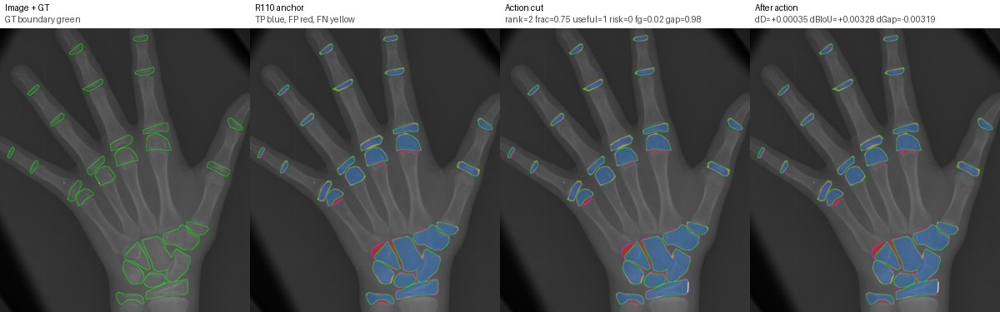
{
"action_frac": "0.75",
"anchor_boundary_f1": "0.2388905457798986",
"anchor_boundary_iou": "0.13564775613886537",
"anchor_component_count_mae": "5.0",
"anchor_component_delta_mean": "-5.0",
"anchor_dice": "0.9149379681143169",
"anchor_gap_region_fp_rate": "0.2724452470250498",
"anchor_iou": "0.843212591748589",
"anchor_precision": "0.9063617927860187",
"anchor_recall": "0.923677992766622",
"candidate_boundary_f1": "0.24395811622251998",
"candidate_boundary_iou": "0.13892499858701182",
"candidate_component_count_mae": "4.0",
"candidate_component_delta_mean": "-4.0",
"candidate_dice": "0.9152917759676009",
"candidate_gap_region_fp_rate": "0.269250358846136",
"candidate_iou": "0.843813806965533",
"candidate_precision": "0.9070732638948275",
"candidate_rank": "2.0",
"candidate_recall": "0.9236605769286589",
"delta_boundary_f1": "0.0050675704426213775",
"delta_boundary_iou": "0.00327724244814645",
"delta_component_count_mae": "-1.0",
"delta_component_delta_mean": "1.0",
"delta_dice": "0.0003538078532839828",
"delta_gap_region_fp_rate": "-0.0031948881789137795",
"delta_iou": "0.0006012152169440066",
"delta_precision": "0.0007114711088087589",
"delta_recall": "-1.7415837963108416e-05",
"image": "1660.png",
"r216_bg_channel_proxy": "1.0",
"r216_bg_component_count_delta": "0.0",
"r216_bg_components_after": "1.0",
"r216_bg_components_before": "1.0",
"r216_crop_area": "3827.0",
"r216_cut_adjacent_bg_components_before": "1.0",
"r216_cut_adjacent_bg_frac_before": "0.359375",
"r216_cut_area": "141.0",
"r216_cut_component_bg_area_after": "2069.0",
"r216_cut_component_bg_frac_crop_after": "0.5406323490985105",
"r216_cut_component_border_contacts_after": "4.0",
"r216_cut_frac_crop": "0.03684348053305461",
"r216_cut_gt_fg_frac": "0.02127659574468085",
"r216_cut_gt_gap_frac": "0.9787234042553191",
"r216_hard_risk": "0.0",
"r216_overerosion_proxy": "0.0",
"r216_quick_useful": "1.0",
"r216_safe_channel_proxy_positive": "1.0",
"run_id": "R216-soft-seam-action-candidate-diagnostic",
"split": "val",
"r219_group": "safe_useful"
}
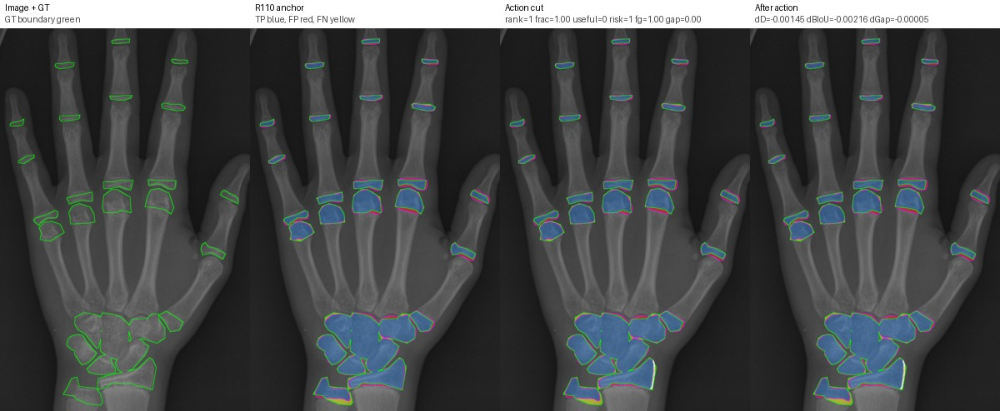
{
"action_frac": "1.0",
"anchor_boundary_f1": "0.29161933785842914",
"anchor_boundary_iou": "0.17069927348209651",
"anchor_component_count_mae": "0.0",
"anchor_component_delta_mean": "0.0",
"anchor_dice": "0.9247887247520992",
"anchor_gap_region_fp_rate": "0.29880467264330346",
"anchor_iou": "0.8600995414030418",
"anchor_precision": "0.9105899009596826",
"anchor_recall": "0.9394373669379009",
"candidate_boundary_f1": "0.28846791118966086",
"candidate_boundary_iou": "0.16854367678853788",
"candidate_component_count_mae": "7.0",
"candidate_component_delta_mean": "7.0",
"candidate_dice": "0.9233344879344186",
"candidate_gap_region_fp_rate": "0.29875033958163544",
"candidate_iou": "0.8575871313672923",
"candidate_precision": "0.9103626075601835",
"candidate_rank": "1.0",
"candidate_recall": "0.936681388186497",
"delta_boundary_f1": "-0.0031514266687682757",
"delta_boundary_iou": "-0.002155596693558637",
"delta_component_count_mae": "7.0",
"delta_component_delta_mean": "7.0",
"delta_dice": "-0.001454236817680532",
"delta_gap_region_fp_rate": "-5.433306166802154e-05",
"delta_iou": "-0.002512410035749535",
"delta_precision": "-0.00022729339949911775",
"delta_recall": "-0.002755978751403876",
"image": "1934.png",
"r216_bg_channel_proxy": "1.0",
"r216_bg_component_count_delta": "0.0",
"r216_bg_components_after": "1.0",
"r216_bg_components_before": "1.0",
"r216_crop_area": "7897.0",
"r216_cut_adjacent_bg_components_before": "1.0",
"r216_cut_adjacent_bg_frac_before": "0.41935483870967744",
"r216_cut_area": "402.0",
"r216_cut_component_bg_area_after": "4607.0",
"r216_cut_component_bg_frac_crop_after": "0.5833860959858174",
"r216_cut_component_border_contacts_after": "4.0",
"r216_cut_frac_crop": "0.05090540711662657",
"r216_cut_gt_fg_frac": "0.9950248756218906",
"r216_cut_gt_gap_frac": "0.004975124378109453",
"r216_hard_risk": "1.0",
"r216_overerosion_proxy": "1.0",
"r216_quick_useful": "0.0",
"r216_safe_channel_proxy_positive": "0.0",
"run_id": "R216-soft-seam-action-candidate-diagnostic",
"split": "val",
"r219_group": "hard_risk"
}
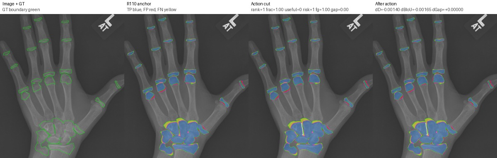
{
"action_frac": "1.0",
"anchor_boundary_f1": "0.22376409366869038",
"anchor_boundary_iou": "0.1259765625",
"anchor_component_count_mae": "3.0",
"anchor_component_delta_mean": "3.0",
"anchor_dice": "0.9055819779816887",
"anchor_gap_region_fp_rate": "0.2541607405743943",
"anchor_iou": "0.8274552865198861",
"anchor_precision": "0.9312506218286738",
"anchor_recall": "0.8812904184940162",
"candidate_boundary_f1": "0.22115289704866253",
"candidate_boundary_iou": "0.12432372444025191",
"candidate_component_count_mae": "13.0",
"candidate_component_delta_mean": "13.0",
"candidate_dice": "0.9041813889696172",
"candidate_gap_region_fp_rate": "0.2541607405743943",
"candidate_iou": "0.825119577152854",
"candidate_precision": "0.9310694240997128",
"candidate_rank": "1.0",
"candidate_recall": "0.8788027453603905",
"delta_boundary_f1": "-0.0026111966200278447",
"delta_boundary_iou": "-0.0016528380597480852",
"delta_component_count_mae": "10.0",
"delta_component_delta_mean": "10.0",
"delta_dice": "-0.001400589012071518",
"delta_gap_region_fp_rate": "0.0",
"delta_iou": "-0.0023357093670320905",
"delta_precision": "-0.00018119772896096897",
"delta_recall": "-0.002487673133625745",
"image": "1855.png",
"r216_bg_channel_proxy": "1.0",
"r216_bg_component_count_delta": "0.0",
"r216_bg_components_after": "1.0",
"r216_bg_components_before": "1.0",
"r216_crop_area": "9860.0",
"r216_cut_adjacent_bg_components_before": "1.0",
"r216_cut_adjacent_bg_frac_before": "0.4065281899109792",
"r216_cut_area": "502.0",
"r216_cut_component_bg_area_after": "2924.0",
"r216_cut_component_bg_frac_crop_after": "0.296551724137931",
"r216_cut_component_border_contacts_after": "3.0",
"r216_cut_frac_crop": "0.050912778904665314",
"r216_cut_gt_fg_frac": "1.0",
"r216_cut_gt_gap_frac": "0.0",
"r216_hard_risk": "1.0",
"r216_overerosion_proxy": "1.0",
"r216_quick_useful": "0.0",
"r216_safe_channel_proxy_positive": "0.0",
"run_id": "R216-soft-seam-action-candidate-diagnostic",
"split": "val",
"r219_group": "hard_risk"
}
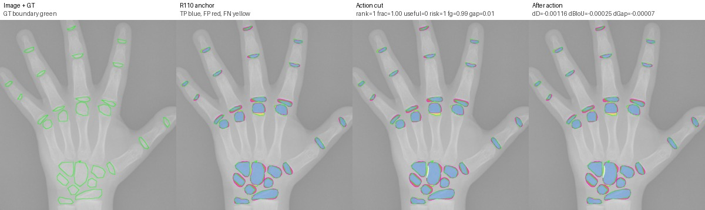
{
"action_frac": "1.0",
"anchor_boundary_f1": "0.25058339052848316",
"anchor_boundary_iou": "0.14323825964141396",
"anchor_component_count_mae": "1.0",
"anchor_component_delta_mean": "-1.0",
"anchor_dice": "0.8760854599693233",
"anchor_gap_region_fp_rate": "0.3824586865455025",
"anchor_iou": "0.779494729150324",
"anchor_precision": "0.8304312486405422",
"anchor_recall": "0.9270515163520646",
"candidate_boundary_f1": "0.2502055357632228",
"candidate_boundary_iou": "0.14299138606108067",
"candidate_component_count_mae": "5.0",
"candidate_component_delta_mean": "5.0",
"candidate_dice": "0.87492065794962",
"candidate_gap_region_fp_rate": "0.3823927169574826",
"candidate_iou": "0.7776524065895096",
"candidate_precision": "0.8301137927870056",
"candidate_rank": "1.0",
"candidate_recall": "0.9248405689675003",
"delta_boundary_f1": "-0.0003778547652603659",
"delta_boundary_iou": "-0.00024687358033329",
"delta_component_count_mae": "4.0",
"delta_component_delta_mean": "6.0",
"delta_dice": "-0.0011648020197032594",
"delta_gap_region_fp_rate": "-6.59695880199096e-05",
"delta_iou": "-0.0018423225608144023",
"delta_precision": "-0.0003174558535365968",
"delta_recall": "-0.002210947384564288",
"image": "1560.png",
"r216_bg_channel_proxy": "1.0",
"r216_bg_component_count_delta": "0.0",
"r216_bg_components_after": "1.0",
"r216_bg_components_before": "1.0",
"r216_crop_area": "5650.0",
"r216_cut_adjacent_bg_components_before": "1.0",
"r216_cut_adjacent_bg_frac_before": "0.453125",
"r216_cut_area": "175.0",
"r216_cut_component_bg_area_after": "1914.0",
"r216_cut_component_bg_frac_crop_after": "0.33876106194690264",
"r216_cut_component_border_contacts_after": "3.0",
"r216_cut_frac_crop": "0.030973451327433628",
"r216_cut_gt_fg_frac": "0.9885714285714285",
"r216_cut_gt_gap_frac": "0.011428571428571429",
"r216_hard_risk": "1.0",
"r216_overerosion_proxy": "1.0",
"r216_quick_useful": "0.0",
"r216_safe_channel_proxy_positive": "0.0",
"run_id": "R216-soft-seam-action-candidate-diagnostic",
"split": "val",
"r219_group": "hard_risk"
}
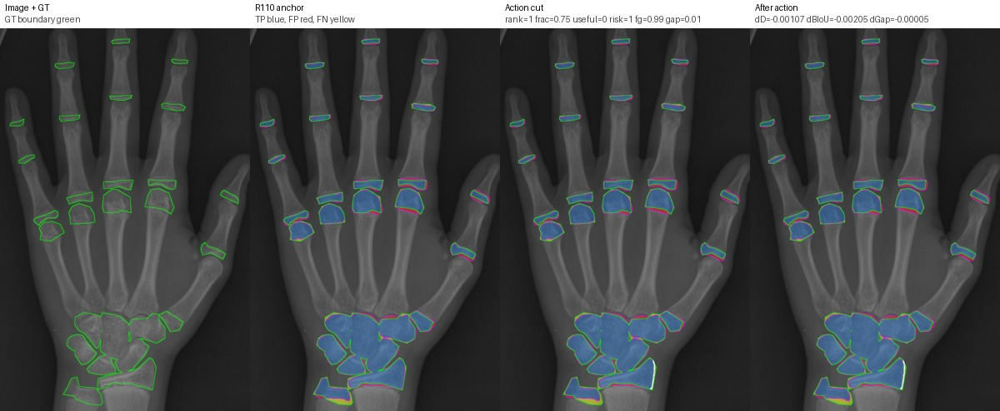
{
"action_frac": "0.75",
"anchor_boundary_f1": "0.29161933785842914",
"anchor_boundary_iou": "0.17069927348209651",
"anchor_component_count_mae": "0.0",
"anchor_component_delta_mean": "0.0",
"anchor_dice": "0.9247887247520992",
"anchor_gap_region_fp_rate": "0.29880467264330346",
"anchor_iou": "0.8600995414030418",
"anchor_precision": "0.9105899009596826",
"anchor_recall": "0.9394373669379009",
"candidate_boundary_f1": "0.2886267576452388",
"candidate_boundary_iou": "0.16865213882163035",
"candidate_component_count_mae": "4.0",
"candidate_component_delta_mean": "4.0",
"candidate_dice": "0.9237182555443532",
"candidate_gap_region_fp_rate": "0.29875033958163544",
"candidate_iou": "0.8582494874625454",
"candidate_precision": "0.9104255888650964",
"candidate_rank": "1.0",
"candidate_recall": "0.9374048326087406",
"delta_boundary_f1": "-0.002992580213190321",
"delta_boundary_iou": "-0.00204713466046616",
"delta_component_count_mae": "4.0",
"delta_component_delta_mean": "4.0",
"delta_dice": "-0.0010704692077460054",
"delta_gap_region_fp_rate": "-5.433306166802154e-05",
"delta_iou": "-0.0018500539404964211",
"delta_precision": "-0.00016431209458622753",
"delta_recall": "-0.002032534329160285",
"image": "1934.png",
"r216_bg_channel_proxy": "1.0",
"r216_bg_component_count_delta": "0.0",
"r216_bg_components_after": "1.0",
"r216_bg_components_before": "1.0",
"r216_crop_area": "7897.0",
"r216_cut_adjacent_bg_components_before": "1.0",
"r216_cut_adjacent_bg_frac_before": "0.4105263157894737",
"r216_cut_area": "297.0",
"r216_cut_component_bg_area_after": "4502.0",
"r216_cut_component_bg_frac_crop_after": "0.5700899075598328",
"r216_cut_component_border_contacts_after": "4.0",
"r216_cut_frac_crop": "0.037609218690642016",
"r216_cut_gt_fg_frac": "0.9932659932659933",
"r216_cut_gt_gap_frac": "0.006734006734006734",
"r216_hard_risk": "1.0",
"r216_overerosion_proxy": "1.0",
"r216_quick_useful": "0.0",
"r216_safe_channel_proxy_positive": "0.0",
"run_id": "R216-soft-seam-action-candidate-diagnostic",
"split": "val",
"r219_group": "hard_risk"
}
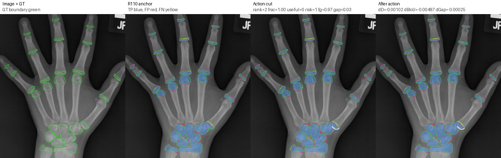
{
"action_frac": "1.0",
"anchor_boundary_f1": "0.2926949806949807",
"anchor_boundary_iou": "0.17143684191482433",
"anchor_component_count_mae": "2.0",
"anchor_component_delta_mean": "-2.0",
"anchor_dice": "0.921664816297023",
"anchor_gap_region_fp_rate": "0.3112669471715755",
"anchor_iou": "0.8547108823177302",
"anchor_precision": "0.9064293331979076",
"anchor_recall": "0.9374212184873949",
"candidate_boundary_f1": "0.2855643692706565",
"candidate_boundary_iou": "0.16656464911964858",
"candidate_component_count_mae": "1.0",
"candidate_component_delta_mean": "-1.0",
"candidate_dice": "0.9206421682439446",
"candidate_gap_region_fp_rate": "0.3110176094748325",
"candidate_iou": "0.8529536184919425",
"candidate_precision": "0.906310691962582",
"candidate_rank": "2.0",
"candidate_recall": "0.9354341736694678",
"delta_boundary_f1": "-0.007130611424324196",
"delta_boundary_iou": "-0.004872192795175756",
"delta_component_count_mae": "-1.0",
"delta_component_delta_mean": "1.0",
"delta_dice": "-0.00102264805307839",
"delta_gap_region_fp_rate": "-0.00024933769674301276",
"delta_iou": "-0.0017572638257876694",
"delta_precision": "-0.00011864123532567827",
"delta_recall": "-0.0019870448179271083",
"image": "1452.png",
"r216_bg_channel_proxy": "1.0",
"r216_bg_component_count_delta": "0.0",
"r216_bg_components_after": "1.0",
"r216_bg_components_before": "1.0",
"r216_crop_area": "6656.0",
"r216_cut_adjacent_bg_components_before": "1.0",
"r216_cut_adjacent_bg_frac_before": "0.4838709677419355",
"r216_cut_area": "235.0",
"r216_cut_component_bg_area_after": "3075.0",
"r216_cut_component_bg_frac_crop_after": "0.4619891826923077",
"r216_cut_component_border_contacts_after": "3.0",
"r216_cut_frac_crop": "0.035306490384615384",
"r216_cut_gt_fg_frac": "0.9659574468085106",
"r216_cut_gt_gap_frac": "0.03404255319148936",
"r216_hard_risk": "1.0",
"r216_overerosion_proxy": "1.0",
"r216_quick_useful": "0.0",
"r216_safe_channel_proxy_positive": "0.0",
"run_id": "R216-soft-seam-action-candidate-diagnostic",
"split": "val",
"r219_group": "hard_risk"
}
{
"action_frac": "0.75",
"anchor_boundary_f1": "0.22376409366869038",
"anchor_boundary_iou": "0.1259765625",
"anchor_component_count_mae": "3.0",
"anchor_component_delta_mean": "3.0",
"anchor_dice": "0.9055819779816887",
"anchor_gap_region_fp_rate": "0.2541607405743943",
"anchor_iou": "0.8274552865198861",
"anchor_precision": "0.9312506218286738",
"anchor_recall": "0.8812904184940162",
"candidate_boundary_f1": "0.22134953566488835",
"candidate_boundary_iou": "0.12444802399533424",
"candidate_component_count_mae": "13.0",
"candidate_component_delta_mean": "13.0",
"candidate_dice": "0.90454443515668",
"candidate_gap_region_fp_rate": "0.2541607405743943",
"candidate_iou": "0.8257244421283803",
"candidate_precision": "0.9311164393983116",
"candidate_rank": "1.0",
"candidate_recall": "0.8794469635025645",
"delta_boundary_f1": "-0.0024145580038020253",
"delta_boundary_iou": "-0.0015285385046657635",
"delta_component_count_mae": "10.0",
"delta_component_delta_mean": "10.0",
"delta_dice": "-0.001037542825008675",
"delta_gap_region_fp_rate": "0.0",
"delta_iou": "-0.001730844391505837",
"delta_precision": "-0.00013418243036222854",
"delta_recall": "-0.0018434549914517762",
"image": "1855.png",
"r216_bg_channel_proxy": "1.0",
"r216_bg_component_count_delta": "0.0",
"r216_bg_components_after": "1.0",
"r216_bg_components_before": "1.0",
"r216_crop_area": "9185.0",
"r216_cut_adjacent_bg_components_before": "1.0",
"r216_cut_adjacent_bg_frac_before": "0.4308176100628931",
"r216_cut_area": "372.0",
"r216_cut_component_bg_area_after": "2657.0",
"r216_cut_component_bg_frac_crop_after": "0.28927599346761024",
"r216_cut_component_border_contacts_after": "3.0",
"r216_cut_frac_crop": "0.04050081654872074",
"r216_cut_gt_fg_frac": "1.0",
"r216_cut_gt_gap_frac": "0.0",
"r216_hard_risk": "1.0",
"r216_overerosion_proxy": "1.0",
"r216_quick_useful": "0.0",
"r216_safe_channel_proxy_positive": "0.0",
"run_id": "R216-soft-seam-action-candidate-diagnostic",
"split": "val",
"r219_group": "hard_risk"
}
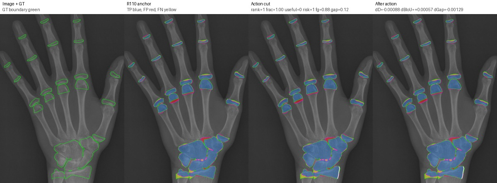
{
"action_frac": "1.0",
"anchor_boundary_f1": "0.2328752530094812",
"anchor_boundary_iou": "0.13178201109235593",
"anchor_component_count_mae": "2.0",
"anchor_component_delta_mean": "2.0",
"anchor_dice": "0.9172126168287946",
"anchor_gap_region_fp_rate": "0.3141119154441111",
"anchor_iou": "0.8470846918649116",
"anchor_precision": "0.9167006986076852",
"anchor_recall": "0.9177251071159905",
"candidate_boundary_f1": "0.23376623376623376",
"candidate_boundary_iou": "0.1323529411764706",
"candidate_component_count_mae": "13.0",
"candidate_component_delta_mean": "13.0",
"candidate_dice": "0.9163351176533148",
"candidate_gap_region_fp_rate": "0.312818254383309",
"candidate_iou": "0.8455890124158896",
"candidate_precision": "0.9167826177107717",
"candidate_rank": "1.0",
"candidate_recall": "0.9158880542502971",
"delta_boundary_f1": "0.0008909807567525629",
"delta_boundary_iou": "0.000570930084114657",
"delta_component_count_mae": "11.0",
"delta_component_delta_mean": "11.0",
"delta_dice": "-0.0008774991754798567",
"delta_gap_region_fp_rate": "-0.001293661060802087",
"delta_iou": "-0.0014956794490220693",
"delta_precision": "8.191910308652517e-05",
"delta_recall": "-0.001837052865693467",
"image": "1931.png",
"r216_bg_channel_proxy": "0.0",
"r216_bg_component_count_delta": "0.0",
"r216_bg_components_after": "1.0",
"r216_bg_components_before": "1.0",
"r216_crop_area": "8850.0",
"r216_cut_adjacent_bg_components_before": "1.0",
"r216_cut_adjacent_bg_frac_before": "0.2857142857142857",
"r216_cut_area": "384.0",
"r216_cut_component_bg_area_after": "5310.0",
"r216_cut_component_bg_frac_crop_after": "0.6",
"r216_cut_component_border_contacts_after": "4.0",
"r216_cut_frac_crop": "0.04338983050847458",
"r216_cut_gt_fg_frac": "0.8776041666666666",
"r216_cut_gt_gap_frac": "0.12239583333333333",
"r216_hard_risk": "1.0",
"r216_overerosion_proxy": "1.0",
"r216_quick_useful": "0.0",
"r216_safe_channel_proxy_positive": "0.0",
"run_id": "R216-soft-seam-action-candidate-diagnostic",
"split": "val",
"r219_group": "hard_risk"
}
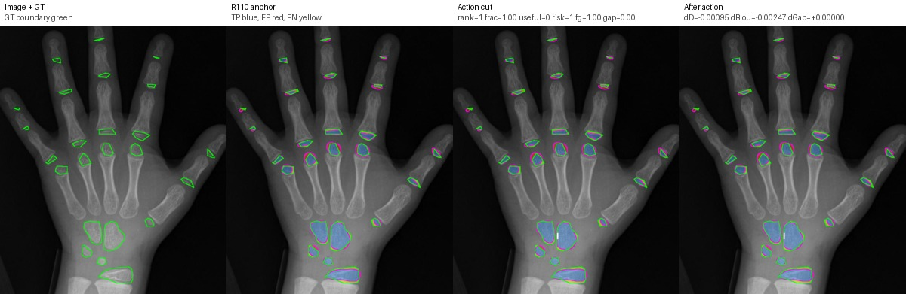
{
"action_frac": "1.0",
"anchor_boundary_f1": "0.2628925940286933",
"anchor_boundary_iou": "0.1513392857142857",
"anchor_component_count_mae": "1.0",
"anchor_component_delta_mean": "-1.0",
"anchor_dice": "0.8270781393886306",
"anchor_gap_region_fp_rate": "0.22116416309012876",
"anchor_iou": "0.7051434261422389",
"anchor_precision": "0.8325570879493557",
"anchor_recall": "0.8216708318457694",
"candidate_boundary_f1": "0.2591645353793691",
"candidate_boundary_iou": "0.14887365328109697",
"candidate_component_count_mae": "1.0",
"candidate_component_delta_mean": "-1.0",
"candidate_dice": "0.8261289815002135",
"candidate_gap_region_fp_rate": "0.22116416309012876",
"candidate_iou": "0.7037646968710505",
"candidate_precision": "0.8322840708365415",
"candidate_rank": "1.0",
"candidate_recall": "0.8200642627632988",
"delta_boundary_f1": "-0.003728058649324184",
"delta_boundary_iou": "-0.0024656324331887303",
"delta_component_count_mae": "0.0",
"delta_component_delta_mean": "0.0",
"delta_dice": "-0.0009491578884170959",
"delta_gap_region_fp_rate": "0.0",
"delta_iou": "-0.001378729271188428",
"delta_precision": "-0.00027301711281413343",
"delta_recall": "-0.001606569082470588",
"image": "5825.png",
"r216_bg_channel_proxy": "1.0",
"r216_bg_component_count_delta": "0.0",
"r216_bg_components_after": "1.0",
"r216_bg_components_before": "1.0",
"r216_crop_area": "2052.0",
"r216_cut_adjacent_bg_components_before": "1.0",
"r216_cut_adjacent_bg_frac_before": "0.4318181818181818",
"r216_cut_area": "36.0",
"r216_cut_component_bg_area_after": "644.0",
"r216_cut_component_bg_frac_crop_after": "0.3138401559454191",
"r216_cut_component_border_contacts_after": "3.0",
"r216_cut_frac_crop": "0.017543859649122806",
"r216_cut_gt_fg_frac": "1.0",
"r216_cut_gt_gap_frac": "0.0",
"r216_hard_risk": "1.0",
"r216_overerosion_proxy": "1.0",
"r216_quick_useful": "0.0",
"r216_safe_channel_proxy_positive": "0.0",
"run_id": "R216-soft-seam-action-candidate-diagnostic",
"split": "val",
"r219_group": "hard_risk"
}
{
"action_frac": "0.75",
"anchor_boundary_f1": "0.22288934534154947",
"anchor_boundary_iou": "0.1254223223282556",
"anchor_component_count_mae": "4.0",
"anchor_component_delta_mean": "-4.0",
"anchor_dice": "0.903463445404243",
"anchor_gap_region_fp_rate": "0.2719449649866851",
"anchor_iou": "0.8239246029853593",
"anchor_precision": "0.9076968542720169",
"anchor_recall": "0.8992693416267071",
"candidate_boundary_f1": "0.22324994744586923",
"candidate_boundary_iou": "0.12565073355418835",
"candidate_component_count_mae": "0.0",
"candidate_component_delta_mean": "0.0",
"candidate_dice": "0.9031572476752247",
"candidate_gap_region_fp_rate": "0.2713285333859355",
"candidate_iou": "0.8234154310278011",
"candidate_precision": "0.9077816996299437",
"candidate_rank": "2.0",
"candidate_recall": "0.8985796729929667",
"delta_boundary_f1": "0.0003606021043197627",
"delta_boundary_iou": "0.00022841122593275642",
"delta_component_count_mae": "-4.0",
"delta_component_delta_mean": "4.0",
"delta_dice": "-0.0003061977290182982",
"delta_gap_region_fp_rate": "-0.0006164316007495896",
"delta_iou": "-0.0005091719575581743",
"delta_precision": "8.484535792685488e-05",
"delta_recall": "-0.0006896686337404256",
"image": "1694.png",
"r216_bg_channel_proxy": "1.0",
"r216_bg_component_count_delta": "0.0",
"r216_bg_components_after": "1.0",
"r216_bg_components_before": "1.0",
"r216_crop_area": "4080.0",
"r216_cut_adjacent_bg_components_before": "1.0",
"r216_cut_adjacent_bg_frac_before": "0.3643410852713178",
"r216_cut_area": "131.0",
"r216_cut_component_bg_area_after": "2147.0",
"r216_cut_component_bg_frac_crop_after": "0.5262254901960784",
"r216_cut_component_border_contacts_after": "4.0",
"r216_cut_frac_crop": "0.0321078431372549",
"r216_cut_gt_fg_frac": "0.8091603053435115",
"r216_cut_gt_gap_frac": "0.19083969465648856",
"r216_hard_risk": "0.0",
"r216_overerosion_proxy": "1.0",
"r216_quick_useful": "1.0",
"r216_safe_channel_proxy_positive": "0.0",
"run_id": "R216-soft-seam-action-candidate-diagnostic",
"split": "val",
"r219_group": "ambiguous"
}
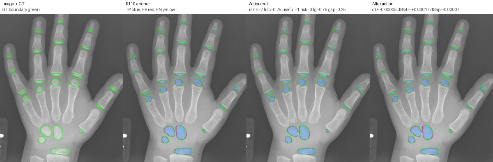
{
"action_frac": "0.25",
"anchor_boundary_f1": "0.4851149159339812",
"anchor_boundary_iou": "0.320232155584971",
"anchor_component_count_mae": "0.0",
"anchor_component_delta_mean": "0.0",
"anchor_dice": "0.9162424157891066",
"anchor_gap_region_fp_rate": "0.06518714806227227",
"anchor_iou": "0.8454311454311454",
"anchor_precision": "0.9513855363522256",
"anchor_recall": "0.8836031027216069",
"candidate_boundary_f1": "0.4853156555923842",
"candidate_boundary_iou": "0.32040712468193383",
"candidate_component_count_mae": "0.0",
"candidate_component_delta_mean": "0.0",
"candidate_dice": "0.9161881291702508",
"candidate_gap_region_fp_rate": "0.06512090096058297",
"candidate_iou": "0.8453387103693852",
"candidate_precision": "0.9514244326412361",
"candidate_rank": "2.0",
"candidate_recall": "0.8834685916692822",
"delta_boundary_f1": "0.00020073965840300412",
"delta_boundary_iou": "0.00017496909696285146",
"delta_component_count_mae": "0.0",
"delta_component_delta_mean": "0.0",
"delta_dice": "-5.428661885575892e-05",
"delta_gap_region_fp_rate": "-6.624710168930126e-05",
"delta_iou": "-9.243506176015437e-05",
"delta_precision": "3.88962890105482e-05",
"delta_recall": "-0.00013451105232475946",
"image": "13441.png",
"r216_bg_channel_proxy": "1.0",
"r216_bg_component_count_delta": "0.0",
"r216_bg_components_after": "1.0",
"r216_bg_components_before": "1.0",
"r216_crop_area": "1596.0",
"r216_cut_adjacent_bg_components_before": "1.0",
"r216_cut_adjacent_bg_frac_before": "0.35",
"r216_cut_area": "4.0",
"r216_cut_component_bg_area_after": "602.0",
"r216_cut_component_bg_frac_crop_after": "0.37719298245614036",
"r216_cut_component_border_contacts_after": "3.0",
"r216_cut_frac_crop": "0.002506265664160401",
"r216_cut_gt_fg_frac": "0.75",
"r216_cut_gt_gap_frac": "0.25",
"r216_hard_risk": "0.0",
"r216_overerosion_proxy": "1.0",
"r216_quick_useful": "1.0",
"r216_safe_channel_proxy_positive": "0.0",
"run_id": "R216-soft-seam-action-candidate-diagnostic",
"split": "val",
"r219_group": "ambiguous"
}
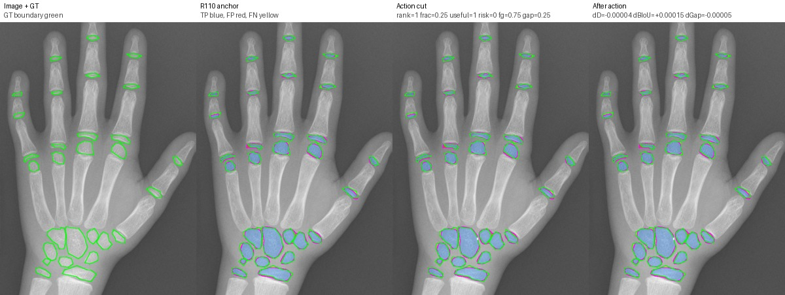
{
"action_frac": "0.25",
"anchor_boundary_f1": "0.4363768379016155",
"anchor_boundary_iou": "0.2790805665196192",
"anchor_component_count_mae": "1.0",
"anchor_component_delta_mean": "-1.0",
"anchor_dice": "0.9025088273555101",
"anchor_gap_region_fp_rate": "0.13884777722962233",
"anchor_iou": "0.822338119750745",
"anchor_precision": "0.9048630519843488",
"anchor_recall": "0.9001668211306766",
"candidate_boundary_f1": "0.43655497762187007",
"candidate_boundary_iou": "0.27922630560928435",
"candidate_component_count_mae": "1.0",
"candidate_component_delta_mean": "-1.0",
"candidate_dice": "0.9024644091736981",
"candidate_gap_region_fp_rate": "0.13879296168393357",
"candidate_iou": "0.8222643682053714",
"candidate_precision": "0.904886139167381",
"candidate_rank": "1.0",
"candidate_recall": "0.9000556070435588",
"delta_boundary_f1": "0.00017813972025454428",
"delta_boundary_iou": "0.00014573908966514226",
"delta_component_count_mae": "0.0",
"delta_component_delta_mean": "0.0",
"delta_dice": "-4.441818181200041e-05",
"delta_gap_region_fp_rate": "-5.4815545688757794e-05",
"delta_iou": "-7.375154537359041e-05",
"delta_precision": "2.3087183032233227e-05",
"delta_recall": "-0.00011121408711778358",
"image": "10375.png",
"r216_bg_channel_proxy": "1.0",
"r216_bg_component_count_delta": "0.0",
"r216_bg_components_after": "1.0",
"r216_bg_components_before": "1.0",
"r216_crop_area": "1517.0",
"r216_cut_adjacent_bg_components_before": "1.0",
"r216_cut_adjacent_bg_frac_before": "0.4117647058823529",
"r216_cut_area": "4.0",
"r216_cut_component_bg_area_after": "381.0",
"r216_cut_component_bg_frac_crop_after": "0.25115359261700726",
"r216_cut_component_border_contacts_after": "3.0",
"r216_cut_frac_crop": "0.0026367831245880024",
"r216_cut_gt_fg_frac": "0.75",
"r216_cut_gt_gap_frac": "0.25",
"r216_hard_risk": "0.0",
"r216_overerosion_proxy": "1.0",
"r216_quick_useful": "1.0",
"r216_safe_channel_proxy_positive": "0.0",
"run_id": "R216-soft-seam-action-candidate-diagnostic",
"split": "val",
"r219_group": "ambiguous"
}
{
"action_frac": "0.75",
"anchor_boundary_f1": "0.4363768379016155",
"anchor_boundary_iou": "0.2790805665196192",
"anchor_component_count_mae": "1.0",
"anchor_component_delta_mean": "-1.0",
"anchor_dice": "0.9025088273555101",
"anchor_gap_region_fp_rate": "0.13884777722962233",
"anchor_iou": "0.822338119750745",
"anchor_precision": "0.9048630519843488",
"anchor_recall": "0.9001668211306766",
"candidate_boundary_f1": "0.4365285757484125",
"candidate_boundary_iou": "0.27920470369797307",
"candidate_component_count_mae": "1.0",
"candidate_component_delta_mean": "-1.0",
"candidate_dice": "0.9024644091736981",
"candidate_gap_region_fp_rate": "0.13879296168393357",
"candidate_iou": "0.8222643682053714",
"candidate_precision": "0.904886139167381",
"candidate_rank": "1.0",
"candidate_recall": "0.9000556070435588",
"delta_boundary_f1": "0.00015173784679695101",
"delta_boundary_iou": "0.00012413717835385585",
"delta_component_count_mae": "0.0",
"delta_component_delta_mean": "0.0",
"delta_dice": "-4.441818181200041e-05",
"delta_gap_region_fp_rate": "-5.4815545688757794e-05",
"delta_iou": "-7.375154537359041e-05",
"delta_precision": "2.3087183032233227e-05",
"delta_recall": "-0.00011121408711778358",
"image": "10375.png",
"r216_bg_channel_proxy": "0.0",
"r216_bg_component_count_delta": "0.0",
"r216_bg_components_after": "1.0",
"r216_bg_components_before": "1.0",
"r216_crop_area": "1444.0",
"r216_cut_adjacent_bg_components_before": "1.0",
"r216_cut_adjacent_bg_frac_before": "0.3333333333333333",
"r216_cut_area": "4.0",
"r216_cut_component_bg_area_after": "339.0",
"r216_cut_component_bg_frac_crop_after": "0.2347645429362881",
"r216_cut_component_border_contacts_after": "3.0",
"r216_cut_frac_crop": "0.002770083102493075",
"r216_cut_gt_fg_frac": "0.75",
"r216_cut_gt_gap_frac": "0.25",
"r216_hard_risk": "0.0",
"r216_overerosion_proxy": "1.0",
"r216_quick_useful": "1.0",
"r216_safe_channel_proxy_positive": "0.0",
"run_id": "R216-soft-seam-action-candidate-diagnostic",
"split": "val",
"r219_group": "ambiguous"
}
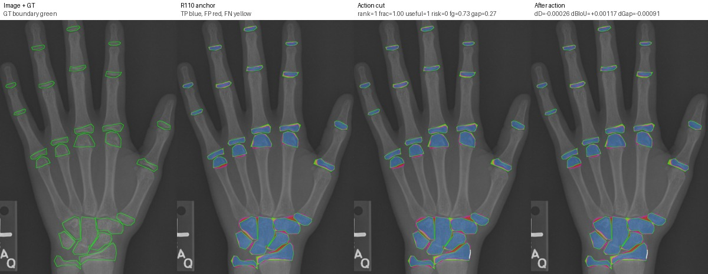
{
"action_frac": "1.0",
"anchor_boundary_f1": "0.22288934534154947",
"anchor_boundary_iou": "0.1254223223282556",
"anchor_component_count_mae": "4.0",
"anchor_component_delta_mean": "-4.0",
"anchor_dice": "0.903463445404243",
"anchor_gap_region_fp_rate": "0.2719449649866851",
"anchor_iou": "0.8239246029853593",
"anchor_precision": "0.9076968542720169",
"anchor_recall": "0.8992693416267071",
"candidate_boundary_f1": "0.2247403210576015",
"candidate_boundary_iou": "0.12659574468085105",
"candidate_component_count_mae": "3.0",
"candidate_component_delta_mean": "-3.0",
"candidate_dice": "0.9032070314032724",
"candidate_gap_region_fp_rate": "0.2710326462175757",
"candidate_iou": "0.82349819634499",
"candidate_precision": "0.9078557296014619",
"candidate_rank": "1.0",
"candidate_recall": "0.8986056982244286",
"delta_boundary_f1": "0.001850975716052028",
"delta_boundary_iou": "0.0011734223525954601",
"delta_component_count_mae": "-1.0",
"delta_component_delta_mean": "1.0",
"delta_dice": "-0.00025641400097053957",
"delta_gap_region_fp_rate": "-0.0009123187691093548",
"delta_iou": "-0.0004264066403693034",
"delta_precision": "0.00015887532944502958",
"delta_recall": "-0.0006636434022785354",
"image": "1694.png",
"r216_bg_channel_proxy": "0.0",
"r216_bg_component_count_delta": "0.0",
"r216_bg_components_after": "1.0",
"r216_bg_components_before": "1.0",
"r216_crop_area": "4095.0",
"r216_cut_adjacent_bg_components_before": "1.0",
"r216_cut_adjacent_bg_frac_before": "0.15671641791044777",
"r216_cut_area": "139.0",
"r216_cut_component_bg_area_after": "2177.0",
"r216_cut_component_bg_frac_crop_after": "0.5316239316239316",
"r216_cut_component_border_contacts_after": "4.0",
"r216_cut_frac_crop": "0.03394383394383394",
"r216_cut_gt_fg_frac": "0.7338129496402878",
"r216_cut_gt_gap_frac": "0.26618705035971224",
"r216_hard_risk": "0.0",
"r216_overerosion_proxy": "1.0",
"r216_quick_useful": "1.0",
"r216_safe_channel_proxy_positive": "0.0",
"run_id": "R216-soft-seam-action-candidate-diagnostic",
"split": "val",
"r219_group": "ambiguous"
}
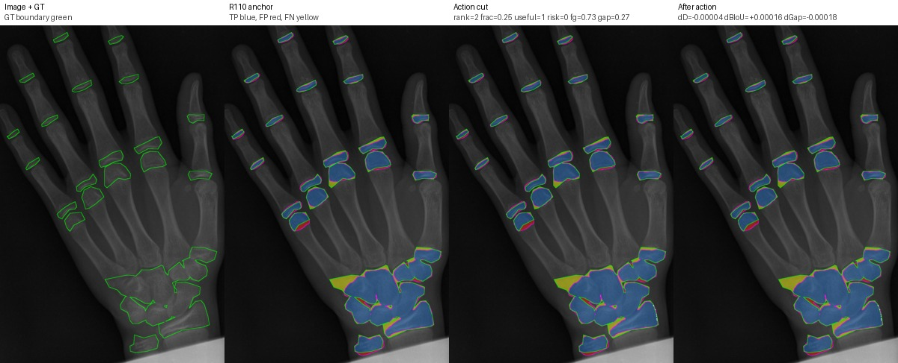
{
"action_frac": "0.25",
"anchor_boundary_f1": "0.2104460365149064",
"anchor_boundary_iou": "0.11759692124906372",
"anchor_component_count_mae": "4.0",
"anchor_component_delta_mean": "4.0",
"anchor_dice": "0.9032246324064638",
"anchor_gap_region_fp_rate": "0.2618191871716892",
"anchor_iou": "0.8235274597643936",
"anchor_precision": "0.9315472140762463",
"anchor_recall": "0.876573462080171",
"candidate_boundary_f1": "0.2107037310676025",
"candidate_boundary_iou": "0.11775787762264833",
"candidate_component_count_mae": "4.0",
"candidate_component_delta_mean": "4.0",
"candidate_dice": "0.9031861797236491",
"candidate_gap_region_fp_rate": "0.2616348723619943",
"candidate_iou": "0.8234635295679299",
"candidate_precision": "0.9315751190783453",
"candidate_rank": "2.0",
"candidate_recall": "0.8764763279777121",
"delta_boundary_f1": "0.00025769455269611385",
"delta_boundary_iou": "0.00016095637358461146",
"delta_component_count_mae": "0.0",
"delta_component_delta_mean": "0.0",
"delta_dice": "-3.84526828146603e-05",
"delta_gap_region_fp_rate": "-0.00018431480969494096",
"delta_iou": "-6.393019646366849e-05",
"delta_precision": "2.79050020990379e-05",
"delta_recall": "-9.713410245881793e-05",
"image": "1886.png",
"r216_bg_channel_proxy": "0.0",
"r216_bg_component_count_delta": "0.0",
"r216_bg_components_after": "1.0",
"r216_bg_components_before": "1.0",
"r216_crop_area": "6612.0",
"r216_cut_adjacent_bg_components_before": "1.0",
"r216_cut_adjacent_bg_frac_before": "0.30952380952380953",
"r216_cut_area": "30.0",
"r216_cut_component_bg_area_after": "3094.0",
"r216_cut_component_bg_frac_crop_after": "0.46793708408953416",
"r216_cut_component_border_contacts_after": "4.0",
"r216_cut_frac_crop": "0.004537205081669692",
"r216_cut_gt_fg_frac": "0.7333333333333333",
"r216_cut_gt_gap_frac": "0.26666666666666666",
"r216_hard_risk": "0.0",
"r216_overerosion_proxy": "1.0",
"r216_quick_useful": "1.0",
"r216_safe_channel_proxy_positive": "0.0",
"run_id": "R216-soft-seam-action-candidate-diagnostic",
"split": "val",
"r219_group": "ambiguous"
}
{
"action_frac": "0.5",
"anchor_boundary_f1": "0.22288934534154947",
"anchor_boundary_iou": "0.1254223223282556",
"anchor_component_count_mae": "4.0",
"anchor_component_delta_mean": "-4.0",
"anchor_dice": "0.903463445404243",
"anchor_gap_region_fp_rate": "0.2719449649866851",
"anchor_iou": "0.8239246029853593",
"anchor_precision": "0.9076968542720169",
"anchor_recall": "0.8992693416267071",
"candidate_boundary_f1": "0.22347279564519945",
"candidate_boundary_iou": "0.12579193557937118",
"candidate_component_count_mae": "3.0",
"candidate_component_delta_mean": "-3.0",
"candidate_dice": "0.9033348480341037",
"candidate_gap_region_fp_rate": "0.27140250517802544",
"candidate_iou": "0.8237107255708579",
"candidate_precision": "0.9077953138757112",
"candidate_rank": "2.0",
"candidate_recall": "0.8989180010019714",
"delta_boundary_f1": "0.0005834503036499794",
"delta_boundary_iou": "0.0003696132511155914",
"delta_component_count_mae": "-1.0",
"delta_component_delta_mean": "1.0",
"delta_dice": "-0.00012859737013926065",
"delta_gap_region_fp_rate": "-0.0005424598086596344",
"delta_iou": "-0.00021387741450140663",
"delta_precision": "9.845960369436746e-05",
"delta_recall": "-0.0003513406247357409",
"image": "1694.png",
"r216_bg_channel_proxy": "1.0",
"r216_bg_component_count_delta": "0.0",
"r216_bg_components_after": "1.0",
"r216_bg_components_before": "1.0",
"r216_crop_area": "3936.0",
"r216_cut_adjacent_bg_components_before": "1.0",
"r216_cut_adjacent_bg_frac_before": "0.368",
"r216_cut_area": "76.0",
"r216_cut_component_bg_area_after": "2038.0",
"r216_cut_component_bg_frac_crop_after": "0.5177845528455285",
"r216_cut_component_border_contacts_after": "4.0",
"r216_cut_frac_crop": "0.019308943089430895",
"r216_cut_gt_fg_frac": "0.7105263157894737",
"r216_cut_gt_gap_frac": "0.2894736842105263",
"r216_hard_risk": "0.0",
"r216_overerosion_proxy": "1.0",
"r216_quick_useful": "1.0",
"r216_safe_channel_proxy_positive": "0.0",
"run_id": "R216-soft-seam-action-candidate-diagnostic",
"split": "val",
"r219_group": "ambiguous"
}
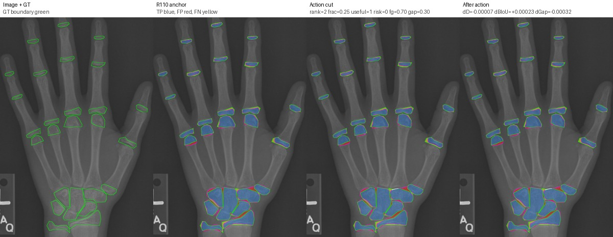
{
"action_frac": "0.25",
"anchor_boundary_f1": "0.22288934534154947",
"anchor_boundary_iou": "0.1254223223282556",
"anchor_component_count_mae": "4.0",
"anchor_component_delta_mean": "-4.0",
"anchor_dice": "0.903463445404243",
"anchor_gap_region_fp_rate": "0.2719449649866851",
"anchor_iou": "0.8239246029853593",
"anchor_precision": "0.9076968542720169",
"anchor_recall": "0.8992693416267071",
"candidate_boundary_f1": "0.22325728270308676",
"candidate_boundary_iou": "0.1256553807873456",
"candidate_component_count_mae": "4.0",
"candidate_component_delta_mean": "-4.0",
"candidate_dice": "0.9033907225020675",
"candidate_gap_region_fp_rate": "0.2716244205542953",
"candidate_iou": "0.8238036473330591",
"candidate_precision": "0.9077555739492597",
"candidate_rank": "2.0",
"candidate_recall": "0.8990676460828774",
"delta_boundary_f1": "0.00036793736153728496",
"delta_boundary_iou": "0.00023305845908999645",
"delta_component_count_mae": "0.0",
"delta_component_delta_mean": "0.0",
"delta_dice": "-7.2722902175415e-05",
"delta_gap_region_fp_rate": "-0.0003205444323897688",
"delta_iou": "-0.00012095565230019201",
"delta_precision": "5.871967724280225e-05",
"delta_recall": "-0.00020169554382976074",
"image": "1694.png",
"r216_bg_channel_proxy": "1.0",
"r216_bg_component_count_delta": "0.0",
"r216_bg_components_after": "1.0",
"r216_bg_components_before": "1.0",
"r216_crop_area": "3936.0",
"r216_cut_adjacent_bg_components_before": "1.0",
"r216_cut_adjacent_bg_frac_before": "0.4051724137931034",
"r216_cut_area": "44.0",
"r216_cut_component_bg_area_after": "2006.0",
"r216_cut_component_bg_frac_crop_after": "0.5096544715447154",
"r216_cut_component_border_contacts_after": "4.0",
"r216_cut_frac_crop": "0.011178861788617886",
"r216_cut_gt_fg_frac": "0.7045454545454546",
"r216_cut_gt_gap_frac": "0.29545454545454547",
"r216_hard_risk": "0.0",
"r216_overerosion_proxy": "1.0",
"r216_quick_useful": "1.0",
"r216_safe_channel_proxy_positive": "0.0",
"run_id": "R216-soft-seam-action-candidate-diagnostic",
"split": "val",
"r219_group": "ambiguous"
}